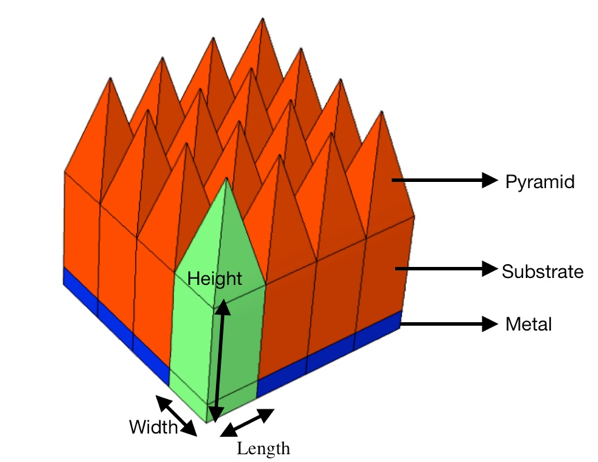

Achieving Broadband High Emissivity in the Infrared with ‘Diamond Forests’
Da Lin
(Affiliation): Department Name of Organization, Name of Organization, City, Country
Email: 1d20010110@163.com
Abstract
Radiative cooling, a technology that does not require energy input, still has the effect of cooling (releasing energy). ‘Diamond forest’, the properly designed structure of Al2O3 and Ag can achieve the goal. The principle of radiative cooling is using materials with high emissivity and reflectivity so that they do not absorb radiation from the sun while releasing heat through radiating. Finite-difference time-domain (FDTD) method is used to simulate various structures of this ‘diamond forest’. The designed structure is as following. The red part including pyramid and substrate are made of Al2O3 and blue part is made of Ag. The electromagnetic waves used have wavelengths between 5 μm and 10 μm. During simulation, only one period of the ‘diamond forest’ (green part) is tested and the properties such as width, length, height are changed to identify different results. Under such circumstances, efficiency of this system is relatively high when either substrate or pyramid height is lowered.
Keywords
Thermal dynamics, Heat transformation, Electromagnetic energy, Radiative cooling
1. Introduction
Nowadays, energy shortage, pollution, and greenhouse effect have been severe problems faced by the whole world [1-2]. Air-conditioning contributes a lot to these existing problems. According to researches, ratio of refrigeration in building energy use is 10% [3]. Thus, to find a new technology with less energy input, less pollution, and less output is an urgent issue [4]. Radiative cooling, as a passive cooling technology, can be a great substitute for air-conditioners [5-9].
According to laws of thermal dynamics, heat can be transferred to objects of lower temperatures [10]. Therefore, natural cooling sources like glaciers and deep sea water can be used. However, these resources are limited, because this will also cause earth temperature to raise which cause other problems. In fact, the best source for cooling is the universe. The temperature of universe is 3 Kelvin while the earth is around 300 Kelvin. Two objects with different temperatures can exchange energy by radiation as long as the temperature difference is maintained. If heat can be transferred to universe in the form of electromagnetic waves in the infrared without extra energy consumption, cooling can be achieved [11].
Radiative cooling is a passive way that utilizes the properties of certain materials and structures that have a high value of emissivity in the infrared and high reflectivity in the visible and near infrared so that they can emit radiation while do not absorb radiation. As a result, radiative cooling is achieved [5-9]. Radiative cooling provides a way of achieving indoor thermal comfort with low or no energy consumption [5]. This technology can be an assist for air-conditioning to lower indoor temperature. Normally, such apparatuses are set on the roof of a building so that it gets the most access to the clear sky during both day and night time [12-13].
In this research, we investigated a specific radiative cooling structure, called ‘diamond forests’, which are consisted of a Al2O3 emitting pyramids and a reflective sheet of Ag. By changing geometrical the properties of the structure such as height of the substrate and height of the pyramid, it is found that the transmission of electromagnetic waves is changed. The best emissivity is achieved within our parameter space while considering the difficulty in realization of the structures.
2. Results and Discussions

Figure 1. The diagram of diamond forest structure consisting of a metal reflector and oxide pyramids. The pyramids and substrate (red parts) are made of Al2O3. The bottom reflector (blue part) is made of Ag. The green part is a unit cell of the ‘diamond forest’, with a period length of 3 μm.
The ‘diamond forest’ under investigation is shown in Figure 1. It is consisted of a metal reflector and oxide pyramids. The green part represents a unit cell of the structure. Its pyramids and substrate parts are made of Al2O3 while its bottom part is made of Ag. Each period is aligned right next to each other to form a two dimensional ‘diamond forest’ structure. Due to the periodicity, only a single unit cell is simulated during the research. Furthermore, due to the symmetry in x and y direction, an input wave with x polarization is used, leading to anti-symmetric boundaries in x-direction and symmetric boundaries in y-direction. The up-most and bottom-most boundaries are set to be perfectly matched layers so that no unwanted reflection occurs. We also put two monitors to measure the reflection and absorption. They are put above the input source and below the silver sheet, respectively. Using this structure and settings, the spectrum properties of electromagnetic waves within certain wavelength range can be accurately calculated.
Figure 2. Relative permittivity of Al2O3 (left) and Ag (right). Both real (blue lines) and imaginary (red lines) part of permittivity are presented.
Figure 3. Absorption spectrum of the ‘diamond forest’ in the infrared.
We choose to use Al2O3 and Ag as the building blocks for our structure based on two facts. First, Al2O3 has a strong absorption in the infrared due to its resonance while absorbs little in the visible and near infrared. Second, Ag is known for its high reflection and little absorption in the entire spectrum from visible to infrared. The relative permittivity of these two materials are plotted in Figure 2 with data from [14]. It can be easily identified that the resonance peak of Al2O3 is around 13 μm. Besides, Ag possesses a very high (on the order of 102 to 103) value for its real part, indicating strong reflection. Although the resonance peak of Al2O3 is in the infrared, high reflection may occur due to its low real part (can be much lower than 1). To reduce the impedance match between air and Al2O3, the diamond pyramids plays an important role. The impedance gradually changes from the tip of the pyramids to the thick substrate, leading to strong interaction between input electromagnetic wave and the materials.
We designed a structure with sizes which can be changed in later trails. Each period is designed as following. The pyramid, substrate and bottom metal has a height of 5 μm, 10 μm and 200 nm, respectively. All of them are set to be of 3 μm wide in x and y direction. The frequency and power monitor set at the x-y plane at the top of this structure measures the reflection. Figure 3 shows a typical absorption spectrum of the structure under investigation. It is clear that when electromagnetic waves with wavelengths of 10 μm and higher reaches the structure, almost no reflection occurs and the absorption decreases almost linearly with decreasing wavelength in the range of 5 μm to 10 μm.
Figure 4. The electromagnetic field distribution within a unit cell of the diamond forest under different wavelength excitations from 5 μm to 14 μm with 1 μm interval.
To further explore the details of the absorption mechanism. We plotted in Figure 4 the electromagnetic field distribution within a unit cell of the diamond forest under different wavelength excitations from 5 μm to 14 μm with 1 μm interval. For relatively short wavelength range from 5 μm to 9 μm [Figure 4(a) to (e)], the electromagnetic wave penetrates through the entire Al2O3 part and partially get reflected. The wavelength difference is discerned by the interference pattern. For 10 μm wave, the wave is able to get to the bottom of Al2O3 but due to the high absorption of Al2O3, almost no reflection could be observed, leading to high emissivity. For even longer wavelength from 11 μm to 14 μm, the absorption mainly occurs in the pyramid region due to the even higher absorption of the material. The 200 nm Ag sheet guarantees that there is no transmission through the structure.
Figure 5. Absorption of electromagnetic waves into one period of diamond forest with different situations due to different wavelengths (x-y direction). Height of substrate and pyramid are represented in the graph. Other parameters are as following:
height of metal = 200 nm, period = 3 μm.
To explore the robustness of our ‘diamond forest’, we did the following. First, the metal thickness was changed from 200 nm to 1000 nm while keeping all other parameters unchanged. The absorption/emissivity of the ‘diamond forest’ remains almost the same. It can be inferred that thicker metal does not affect the overall absorption in the infrared.
Second, the period of the structure is changed from 3 μm to 5 μm while leaving all other parameters unchanged. Once again, it shows no difference with the unchanged absorption spectrum. We can deduce that change of period in the range from 3 μm to 5 μm does not affect the overall absorption of electromagnetic waves, leaving large design and fabrication space for the structure.
Third, the height of the pyramid was changed from 5 μm to 20 μm. It is shown that the overall trend of absorption does not change, which still decreases with respect to wavelength. However, the highest absorption decreases from 0.8 to 0.7 which indicates that less electromagnetic waves can be transmitted through a period with greater pyramid height. This is shown as the yellow line in Figure 5.
Finally, height of the substrate was changed from 10 μm to 40 μm. It is shown that the overall trend of absorption does not change, which still decreases with respect to wavelength. However, the lowest absorption increases from 0.2 to 0.6 which indicated that less electromagnetic waves can be transmitted through a period with greater pyramid height. Also, for higher wavelength, little absorption is shown again. This is shown as the red line in Figure 5.
3. Conclusions
In summary, we have numerically demonstrated a structure in the form of ‘diamond forest’, capable of achieving over 0.9 absorption (or equivalently emissivity) from 9 μm to 15 μm. Specifically, the emissivity approaches near unity from 10 μm to 15 μm with robust design parameters. The use of optically (visible and near infrared) transparent material (Al2O3) could potentially enable minimum absorption in the visible and near infrared where the solar flux is the strongest. The proposed structure also has a large design space, allowing fabrication errors. We anticipate the proposed ‘diamond forest’ structure will be of great importance in passive cooling applications.
References
[1] Chu, Steven, and Arun Majumdar. “Opportunities and challenges for a sustainable energy future.” Nature 488, no. 7411 (2012): 294.
[2] Chu, Steven, Yi Cui, and Nian Liu. “The path towards sustainable energy.” Nature Materials 16, no. 1 (2017): 16.
[3] Kreith, Frank, Shan K. Wang, and Paul Norton. Air conditioning and refrigeration engineering. CRC Press, 2018.
[4] Conti, John, Paul Holtberg, Jim Diefenderfer, Angelina LaRose, James T. Turnure, and Lynn Westfall. International energy outlook 2016 with projections to 2040. No. DOE/EIA-0484 (2016). USDOE Energy Information Administration (EIA), Washington, DC (United States). Office of Energy Analysis, 2016.
[5] Hsu, Po-Chun, Alex Y. Song, Peter B. Catrysse, Chong Liu, Yucan Peng, Jin Xie, Shanhui Fan, and Yi Cui. “Radiative human body cooling by nanoporous polyethylene textile.” Science 353, no. 6303 (2016): 1019-1023.
[6] Hossain, Md Muntasir, and Min Gu. “Radiative cooling: principles, progress, and potentials.” Advanced Science 3, no. 7 (2016): 1500360.
[7] Gentle, A. R., and G. B. Smith. “Is enhanced radiative cooling of solar cell modules worth pursuing?.” Solar Energy Materials and Solar Cells 150 (2016):39-42.
[8] Zhai, Yao, Yaoguang Ma, Sabrina N. David, Dongliang Zhao, Runnan Lou, Gang Tan, Ronggui Yang, and Xiaobo Yin. “Scalable-manufactured randomized glass-polymer hybrid metamaterial for daytime radiative cooling.” Science 355, no. 6329 (2017): 1062-1066.
[9] Hossain, Md Muntasir, Baohua Jia, and Min Gu. “A metamaterial emitter for highly efficient radiative cooling.” Advanced Optical Materials 3, no. 8 (2015): 1047-1051.
[10] Welty, James R., Gregory L. Rorrer, and David G. Foster. Fundamentals of Momentum, Heat, and Mass Transfer: International Student Version. Wiley, 2015.
[11] Hanif, M., T. M. I. Mahlia, A. Zare, T. J. Saksahdan, and H. S. C. Metselaar. “Potential energy savings by radiative cooling system for a building in tropical climate.” Renewable and Sustainable Energy Reviews 32 (2014): 642-650.